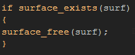

Tutorial
Page 4 of 10
Decals
You have seen how using surfaces has saved us drawing multiple instances to create a nice soft shadow effect, so lets now use this same idea and expand upon it to create a debris effect.
In our game, we have a series of instances which we have called decals. these instances are nice little effects that offer nothing to the gameplay, but they help give a nice "feel" to our
game and add realism. However, to keep the instance number down as low as possible, we have to limit how many of these instances we have in the room. You can test this and see what happens by
simply removing the Alarm[0] event from the obj_Decal parent object. After playing for a minute or two the game will start to slow down and eventually become un-playable.
Can surfaces help here? Yes, they most definitely can!
Create another new object and call it "obj_Decal_Surface". This object is going to "catch" the decal instances and draw their sprites, meaning that we can then destroy them and so save cpu cycles and make our
game appear to have a million instances, but really have very few!
As with the shadow surface object, give it a create event with the following code:

Again, we need to add a Room End Event to free the surface memory too and keep everything tidy:

Now, add a draw event and in that place this code block:
As you can see, it looks quite similar to that which we used for the walls, only this time we draw to the surface not when it is first created, but every step therafter when an instance of obj_Decal
exists.
What happens is that the surface instance checks to see if this decal instance (or any of its children) exists in the game, and if they do it then sets the drawing target (no need to set the blend modes this time as we
don't mind if the alphas over-write each other) and then it makes sure that the instances have stopped moving. If the checks are all true, the instance is drawn (with it's shadow if it has one) and then destroyed. Finally
the draw target is reset to the screen, and the surface itself is drawn for the player to see.
Place an instance of the new decals surface into your room and play your game, paying attention to how much debris is left behind while you fight now! Without surfaces, your instance count would quickly have run
into the thousands and your game would be nearly un-playable...

Click on the Next button to go to the next page of the tutorial.